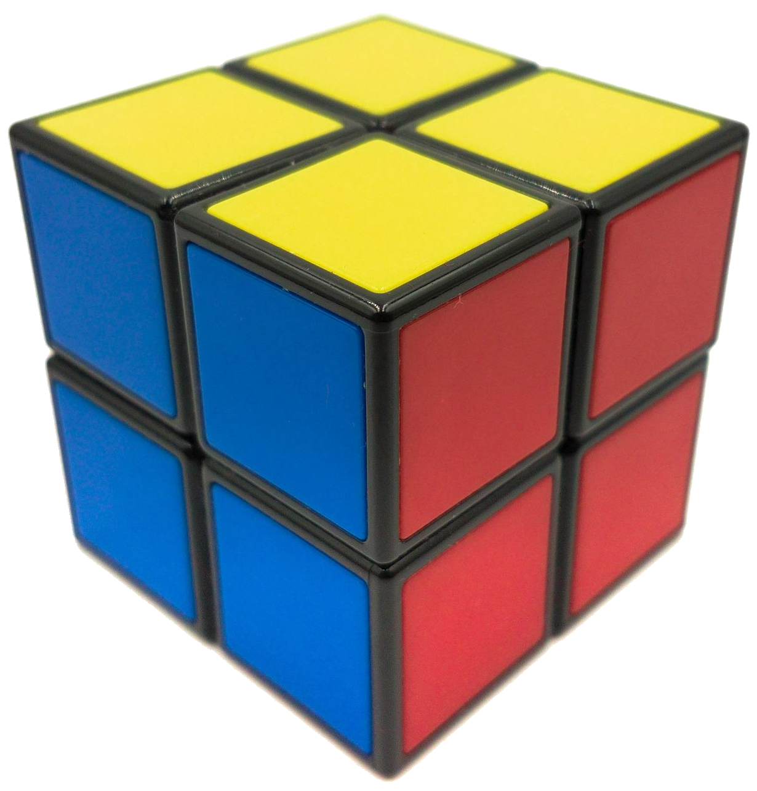

큐브의 구조

큐브의 구조
3x3x3 큐브는 센터 조각(혹은 중앙 조각), 엣지 조각(또는 모서리 조각), 귀퉁이 조각(또는 코너 조각)으로 이루어져 있습니다.

3x3x3 큐브를 분해해 보면
센터는 코어에 고정되어 있고, 흰색과 노란색, 초록색과 파란색, 주황색과 빨간색이 마주보고
엣지 조각이 12개, 코너 조각이 8개로 이루어졌다는 걸 알 수 있습니다.
▲큐브 분해하는 방법 영상
저렇게 해도 분해가 안되는 큐브는 센터 뚜껑을 열어서 나사를 느슨하게 풀어주시면 됩니다!
위에 용어들을 알고 나면 2x2x2 큐브는 코너 8개로만 이루어졌다는 걸 알 수 있으실 겁니다.
이제 큐브의 구조를 보셨으니 각 조각은 다른 조각에 갈 수 없다는 걸 눈치채셨겠죠?
그럼 이제 큐브의 회전 기호를 익히러 가보겠습니다. 큐브를 맞추는 데 있어서 중요한 부분이니 꼭 숙지해두시길 바라겠습니다.
▲화살표를 클릭하면 링크로 이동합니다.